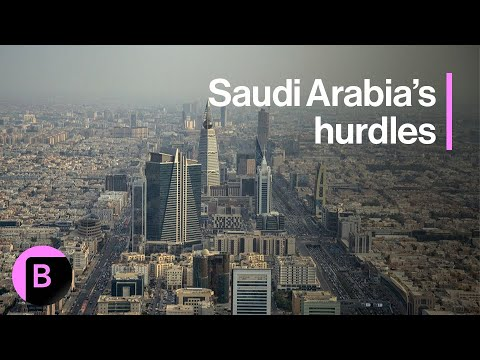

【沙特阿拉伯的困境如何重塑中东金融秩序】
Summary: Bankers and business leaders are increasingly focusing on Saudi Arabia's Gulf neighbors like Qatar and the UAE as the kingdom faces lower oil prices and a significant deficit.
摘要： 银行家和商界领袖正将更多注意力转向沙特阿拉伯的海湾邻国，如卡塔尔和阿联酋，因为该国正面临油价下跌和巨额赤字的问题。

⏱️ Estimated Reading Time: 6 min
📚 六级生词 📚 雅思生词 📚 托福生词 📚 GRE生词 📚 视频里的生词
Bankers and business leaders are shifting more attention towards Saudi Arabia's neighbors in the Gulf, such as Qatar and UAE.
银行家和商界领袖正将更多注意力转向沙特阿拉伯的海湾邻国，如卡塔尔和阿联酋。
As the kingdom grapples with lower oil prices and a deep deficit that is the subject of today's big take.
由于该国正面临油价下跌和巨额赤字的问题，这成为今日讨论的重点。
So for more, let's get out to Bloomberg's Matthew Martin in Riyadh.
更多详情，让我们连线在利雅得的彭博社记者马修·马丁。
A really interesting deep dive into.
这是一次非常有趣的深入探讨。
I would say the developments over the last couple of months, years, even, Matthew.
马修，我想说的是过去几个月甚至几年来的发展。
But then also coming on the heels of President Trump's trip around the GCC.
但这也紧随特朗普总统对海湾合作委员会国家的访问之后。
And you point out in this piece that Saudi Arabia perhaps is a little different in terms of financial as versus, say, Qatar and Abu Dhabi, because it has transitioned from being a net exporter of capital to a net importer of capital.
你在文中指出，沙特阿拉伯在金融方面可能与卡塔尔和阿布扎比有所不同，因为它已从资本净出口国转变为资本净进口国。
Tell us more.
请详细说明。
Yeah, good morning, Joumanna.
早上好，朱曼娜。
I mean, exactly as you say.
正如你所说。
I mean, you know something that very simply Saudi Arabia, just the sheer extent of this domestic spending program that's been launched under the crown prince, Prince Mohammed bin Salman means that Saudi Arabia, although it has all of this huge oil resource, which has been pumping for four decades and earning, you know, tens and hundreds of billions of dollars on a lot of that is now all being sucked up on domestic spending, which means increasingly that Saudi Arabia actually needs to raise money from outside to bring into the country to invest in Saudi Arabia, which is a very different position from neighbors.
简单来说，沙特阿拉伯在王储穆罕默德·本·萨勒曼领导下启动的大规模国内支出计划意味着，尽管该国拥有巨大的石油资源，过去四十年通过石油出口赚取了数千亿美元，但如今大部分资金都被用于国内支出，因此沙特实际上需要从外部筹集资金以投资国内，这与邻国的情况截然不同。
I mean, especially this is relevant for Qatar and for Abu Dhabi, where they are the smaller economies.
尤其是对卡塔尔和阿布扎比这样经济体量较小的国家来说。
They have big hydrocarbon endowments.
它们拥有丰富的碳氢资源。
So they are earning far more money than they can possibly digest in their local economies.
因此，它们赚取的收入远超本地经济所能消化的规模。
And so what this means is that, you know, a few years ago, when the was making a big splash and doing all these big investments and seems to be sort of backing every deal that was coming across and, you know, giving 00 billion to SoftBank, everybody was flooding in to Saudi Arabia because they thought that it was going to be an easy place to come and raise money.
这意味着，几年前当沙特大举投资并似乎支持每一笔交易时，比如向软银投资数百亿美元，所有人都涌向沙特，认为那里是筹集资金的理想之地。
And now what they're finding is that actually what Saudi Arabia wants is quite different from the things that Qatar and Abu Dhabi want.
但现在他们发现，沙特的需求与卡塔尔和阿布扎比的需求大不相同。
Qatar and Abu Dhabi are much more able to say, we just want to do this deal for financial returns where Saudi want something quite different from what it's going to do with these sorts of partners.
卡塔尔和阿布扎比更倾向于追求财务回报的交易，而沙特则希望从合作伙伴那里获得完全不同的东西。
Yeah.
是的。
And also, you know, the other the reason that this is the situation that these countries find themselves in is of course, the break even oil price and UAE is significant, lower, significantly lower than it is in Saudi Arabia.
此外，这些国家之所以处于这种局面，当然是因为盈亏平衡油价，而阿联酋的盈亏平衡油价远低于沙特。
And Qatar, of course, have the boon coming from extra gas fields coming on line.
卡塔尔则得益于新天然气田的投产。
So that's the perhaps hydrocarbon backdrop to all of this.
这或许是所有这些问题的碳氢资源背景。
But how would you think this is going to translate into investment activity, into Qatar and into Abu Dhabi in the coming years, Matthew?
马修，你认为这将在未来几年如何影响卡塔尔和阿布扎比的投资活动？
Well, I think what we're going to see, you know, you and I were both in Doha a couple of weeks ago for the Qatar Economic Forum that Qatar is painting a very bullish picture.
我认为我们将看到的是，几周前我们都在多哈参加卡塔尔经济论坛，卡塔尔描绘了一幅非常乐观的图景。
They are very they're very excited about the opportunities that they see investing into the United States.
他们对投资美国的机会感到非常兴奋。
So the QIA has said that it's going to put $500 billion into investing into the US over the next decade.
卡塔尔投资局表示，未来十年将向美国投资5000亿美元。
So, I mean, that means that if you are a global fund manager, Qatar is going to be one of those key places that you're going to want to go to try and raise money for your funds or for your private equity takeovers and all of those sorts of big global deal making.
因此，如果你是全球基金经理，卡塔尔将成为你筹集资金或进行私募股权收购等大型全球交易的关键目的地之一。
And similarly, in Abu Dhabi, you've got that same dynamic.
同样，阿布扎比也有类似的趋势。
Both those countries as well, of course, have already invested a lot in the infrastructure that they need domestically.
当然，这两个国家已经在国内所需的基础设施上投入了大量资金。
So they don't need to invest as much within their own countries as you do in Saudi Arabia.
因此，它们不需要像沙特那样在国内投入大量资金。
You know, Saudi has got a very different proposition.
沙特的定位非常不同。
It's got 35 million people.
它有3500万人口。
It's got a very, very oil dependent economy.
经济高度依赖石油。
It hasn't invested in much in its domestic infrastructure.
国内基础设施投资不足。
So it's ploughing all of that money back in.
因此，它正将所有资金重新投入国内。
And as much as it might do some international deals, it really wants them to have a local angle which play into it into this plan of diversifying the Saudi economy and developing it and creating jobs.
尽管它可能会进行一些国际交易，但它希望这些交易具有本地视角，以支持其经济多元化、发展和创造就业的计划。